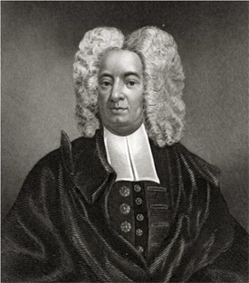
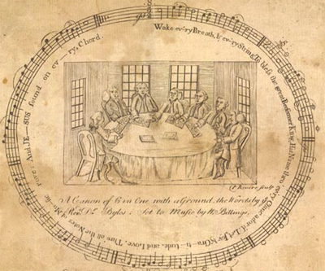
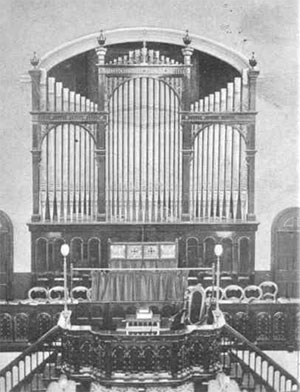
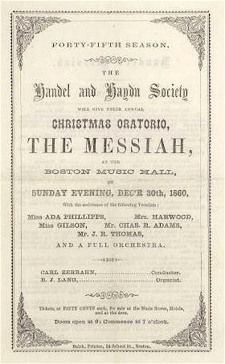
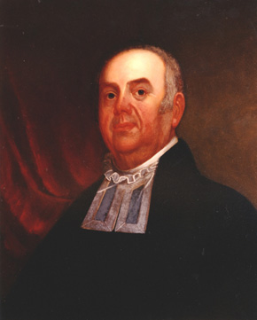

|
In the American colonial period and well into the nineteenth century,
religious music was the most widespread form of popular music in America,
enjoyed and performed by more people than any other contemporary type of musical
entertainment. Psalms--traditional sacred melodies with texts taken only from the
Old Testament Book of Psalms--and hymns--new music and texts written by
contemporary musicians and poets, often using new evangelical themes--were sung
by in churches across the nation, from Puritan New England to the
Lutheran-dominated states of the mid-Atlantic to the mostly Anglican South.
Variations in styles, languages, and instrumentation created a patchwork quilt
of sacred sounds, which were by far the predominant musical culture of the
Europeans that settled in the colonies that became the United States.
This emphasis on the ubiquity of sacred music should not marginalize the
significance of secular folks songs, country dance tunes, and topical broadside
|

Cotton Mather
|
ballads, which all enjoyed increasing popularity as American print products
became cheaper and distribution expanded in the economic boom of the 1790s.
Early American people enjoyed both types of music and many of their personal
manuscript tunebooks that have survived from the 1760s to the 1830s contain both
sacred and secular favorite pieces. As early as 1713, Massachusetts minister
Cotton Mather had noted the ubiquity of secular music in his diary: "I am
informed that the Minds and Manners of many People about the Country are much
corrupted, by foolish Songs and Ballads, which the Hawkers and Pedlars carry
into all parts of the Countrey." However, sacred music constituted a much larger
share of printed and distributed music books that were imported from England,
both in the colonial period and in the nineteenth century. By the 1790s, the
more adaptive, egalitarian, and rapidly expanding evangelical denominations,
such as the Baptists and Methodists, sometimes used melodies from well-known
secular tunes fitted with new lyrics to carry the messages of their particular
faith. The line between sacred and secular music was well demarcated, but the
listening public easily moved between these spheres.
In the colonial era--and indeed, well into the nineteenth century--sacred music
was by no means limited to church, and could be heard in everyday situations
outside of religious services, at social affairs such as weddings,
house-raisings, college commencements, and government convocations. Tradesmen
sung favorite hymns while working and people often treasured particular sacred
pieces imbued with deeply personal meaning throughout their lives.
Traditions--theological, ethnic, familial, as well as musical--played a strong
part in inhibiting experimentation during most of the colonial period. For
example, the first song of confirmed American composition, "My Days Have Been So
Wondrous Free" by Francis Hopkinson, was not written until 1759. Nearly all
music was imported from or through England, or from German states in the case of
Lutheran communities. What changes did evolve came very slowly over the course
of many years and could often be met with fierce resistance by members of a
|

The title page of William Billings'
The New England Psalm-Singer featured an engraving
by Paul Revere.
|
congregation. Sometimes, divisions over music preferences could even split
church membership into separate congregations. However, by the 1790s and early
1800s, the rhythm of change in worship music had considerably increased,
mirroring changes in American religion itself.
The years following the Revolution saw the rapid rise in popularity of
American composed hymnody, especially in the northern states where most of these
self-taught and self-employed musicians resided, and where most printing presses
were located. They took their cue from a few patriotic psalmodists who composed
just before and during the Revolution, such as storekeeper Daniel Read of New
Haven, Connecticut and tanner William Billings of Boston, Massachusetts. In 1770
Billings had published his first tunebook, The New England Psalm-Singer,
which consisted of 127 of his own sacred compositions, and by 1778 he had
published "Chester," a secular and patriotic hymn more familiar to American
troops during the Revolution than "Yankee Doodle." The members of this New
England "school" of composers were prompted by religious devotion, a sense of
nationalism, and a new spirit of American entrepreneurialism. The American style
of hymnody reflected a lack of training in European standards of composition by
these laboring men who frequently came from rural backgrounds and practiced
music as a part time labor of love. However, some of their works are of sublime
beauty in stark, haunting harmonic arrangements coupled with verses of personal
pain and introspective humility. American sacred music publishing increased by a
factor of ten during this time, from 23 editions in the decade of the 1760s to
222 in the first decade of the nineteenth century. Over that same time, the
total number of sacred tunes published annually rose from 1,460 to 15,770.
One of the many changes in American sacred music between 1785 to 1825 was the
gradual reintroduction of instruments into American church services. Their
absence was largely the work of Puritan New England--again, home to most American
sacred composers at the time. Reacting to the display and expense of highly
trained musicians, composers, and choirs employed by the English court for the
Church of England in the late sixteenth and early seventeenth centuries,
Puritans banned all instruments, especially organs, and insisted on universal
participation in congregational singing, regardless of ability. Thus, even
having a choir separate from the main congregation was a very contentious
innovation in the Congregational and Presbyterian churches of the Northern
states. For many older churchgoers, the addition of a choir heralded a
degeneration into "popery." As choirs became established, they attracted a
preponderance of younger members, and the resistance to adding instruments
weakened. Stringed instruments such as the violin were an inexpensive and
uncomplicated favorite, and a small sized bass viol called a "church bass"
became especially popular, as it added a strong low underpinning to choral music
that often lacked deep voices.
Organs were a particular problem for Puritan traditionalists in that they
represented a very large financial investment in both the installation as well
as the maintenance of a trained organist--rare in New England. The first organ in
New England was donated by a wealthy Boston merchant to the Brattle Street
Congregational church in 1711, but the congregation refused it. It was
subsequently installed in Boston's first Anglican church, King's Chapel,
instead. For most of the colonial period, organs were imported from England or
|

This organ was built in the United States in
1811.
|
Germany. From the 1790s to the 1820s, American organ builders gradually became
competitive in price and quality with European imports, and organ lofts were
increasingly added to many churches. However, the skilled musicians needed to
play them continued to come from Europe, and herein lies perhaps the most
important alteration in the musical landscape of the early United States.
Although professional musicians from Europe had occasionally come to America
seeking employment opportunities throughout the colonial era, their numbers
could not compare to the large immigration of professional European musicians
that started around 1785. Several factors instigated this shift, not the least
of which was the economic boom of the 1790s that accompanied the dramatic rise
in successful American shipping. As a younger, post-revolutionary cohort of
merchants rose to prominence in Boston, New York, Philadelphia, and smaller
coastal towns, the demand for theatrical entertainment brought an end to
religious-based prohibitions on the construction of theaters. By the mid-1790s,
there were at least two theaters in each of the largest American cities, with
networks of smaller theaters in secondary towns. Each of these major urban
theaters hired whole companies of up to fifty actors and musicians and attached
the American continent to the regular touring route of British cities. The pit
bands for these American theaters usually numbered between ten and fifteen
musicians, with strong string and woodwind sections, a few horns, and the whole
usually anchored with one of the new piano fortes being imported from Europe.
Although these musicians often sailed from England, they included not only
Britons in their ranks, but also Germans, Italians, and Frenchmen.
In addition to the employment opportunities in America, there were forces in
Europe pushing these immigrants to relocate to the United States. The French
Revolution and the subsequent Reign of Terror in the early 1790s sent many court
musicians and musically adept aristocrats fleeing to the new nation, where they
believed a special bond had been established by France's aid to the American
Revolutionary cause. The beginning of the Napoleonic wars in the late 1790s also
displaced many citizens of other European countries, who had a skill they could
easily carry with them out of harm's way. Finally, London had long been
attracting the most talented musicians and composers in Europe, to the neglect
of their own urban professionals, and there were more accomplished musicians
than jobs available. It was often remarked by visitors to the new American
theaters that the music was as polished as any of the many theaters in London.
Although there had always been a culture of imported refinement in American
merchant society, new standards were being established in terms of the extent to
which European taste was being imitated. The broad spectrum of urban society was
encouraged to attend these performances through graduated seat pricing.
The flow of musicians into the United States, initially prompted by demand
for secular music, made it easier and more acceptable for churches to hire
organists. Further, as American organs became more widely available and less
expensive to install, congregations and ministers developed fewer reservations
about the power and majesty of such an instrument. In the boom years after the
War of 1812, merchants did a brisk business in organ installation. Churches with
sufficient means rediscovered that organs not only kept choirs and congregations
singing in tune and on tempo, but also imbued services with a devotional
grandeur that was hard to match. However, the deciding factor in acclimating the
American churchgoing public to the ultimate instrument's presence in their
churches was a newly imported European sacred music form that combined choral
performance with instrumentation called oratorios.
Oratorios had been popular in England since George Frideric Handel had
written The Messiah (1741), Samson (1741), and other pieces. These pieces mixed
|

A program from the Boston Handel and Haydn Society's
1860 performance of Handel's The Messiah.
|
both secular and sacred themes. As the preface to one of Handel's librettos
stated, "Mr. Handel had so happily introduc'd here Oratorios, a musical Drama,
whose Subject must be Scriptural, and in which the Solemnity of church-Musick is
agreeably united with the most pleasing Airs of the Stage." In the 1790s, choral
highlights from these pieces began to attract favorable attention with urban
American listeners eager to emulate things English and European. These
performances gained even wider acceptance after 1800, as European musicians and
choral leaders conversant with oratorios spread beyond urban centers to towns on
the periphery of American settlement.
Oratorios provided an introduction for a wide American audience to seriously
composed European sacred music. The religious content, choral emphasis, and
delivery with the aid of organs that defined oratorio presentations converted
many of the most steadfast critics of instruments in churches. Entries in the
diary of Rev. William Bentley of Salem, Massachusetts capture perfectly the
process of this conversion. Bentley was a highly educated and theologically
liberal cleric, but maintained very traditional Calvinist tastes in what he
deemed appropriate worship music. His journals from the early 1790s convey deep
suspicion of even the most basic use of church bass and violin during Sunday
singing. However, after attending many choral and orchestral performances over a
period of twenty-five years, he gradually became a hearty enthusiast for the new
musical development. By 1818, he was writing extensive and sensitive reviews of
local oratorios.
One of the many significant shifts in American music that coincided with the
new nation's independence was a rise in music literacy, a result of both the
emergence of the first New England school of composers and the arrival of
European musicians. Each group utilized different approaches to music
publishing. The generally urban European instrumentalists were often skilled
|

Rev. William Bentley.
|
engravers themselves and tended to print their own two-page sheet music, or
multi-page magazines of music, on inexpensive copperplate printers that they
owned. The generally rural American psalmodists hired local engravers to etch
copper plates--of which the composers retained ownership for future editions--and
paid printers for prints that they distributed themselves. Sometimes, the
printers also did the engraving and, after the 1790s, musical type became more
prevalent, resulting in larger runs but requiring bigger investment at the
outset.
As noted, the print output of composers dramatically expanded in the early
nineteenth century, where, as one prominent Philadelphian European stated,
"every organ loft groans under the weight of piles of books replete with
'dreadful harmony'." Despite the low regard that many European musicians had for
American composition, it sold well and could become an important source of
income for the homespun tunesmiths who often used their own tunebooks in the
singing schools that they held. These singing schools became an important
fixture in the American rural landscape during the first half of the nineteenth
century. In order to allow untrained or poorly trained musicians to participate,
shapenote publishing became a popular mode of streamlining the ability to read
music. This consisted of substituting different shapes--squares, diamonds,
triangles, etc.--for regular noteheads on a five line staff that always remained
in the same visible key. Actual key changes were signaled with a pitch pipe, so
there were no sharps or flats to keep track of. It was an effective system that
combined sight-reading with singing by ear and worked well in quickly
communicating unfamiliar music. It was especially popular in remote new
settlements to the West and Southwest, as Americans moved into the interior of
the continent.
In short, then, sacred music evolved dramatically in the years between 1780
and 1860, progressing from the simple congregational singing of the Puritans to
impressive, organ-driven, European-influenced oratorios. These changes in sacred
music spilled over to the world of secular music, encouraging the development of
American composition, theatrical performance, and music publishing.
Source: Christopher Bates, ed. The Encyclopedia of the Early
Republic and Antebellum America (Armonk, NY: M.E. Sharpe, 2010), 694-697.
|